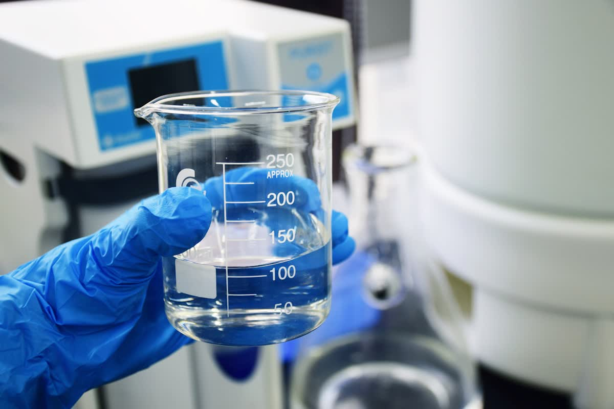
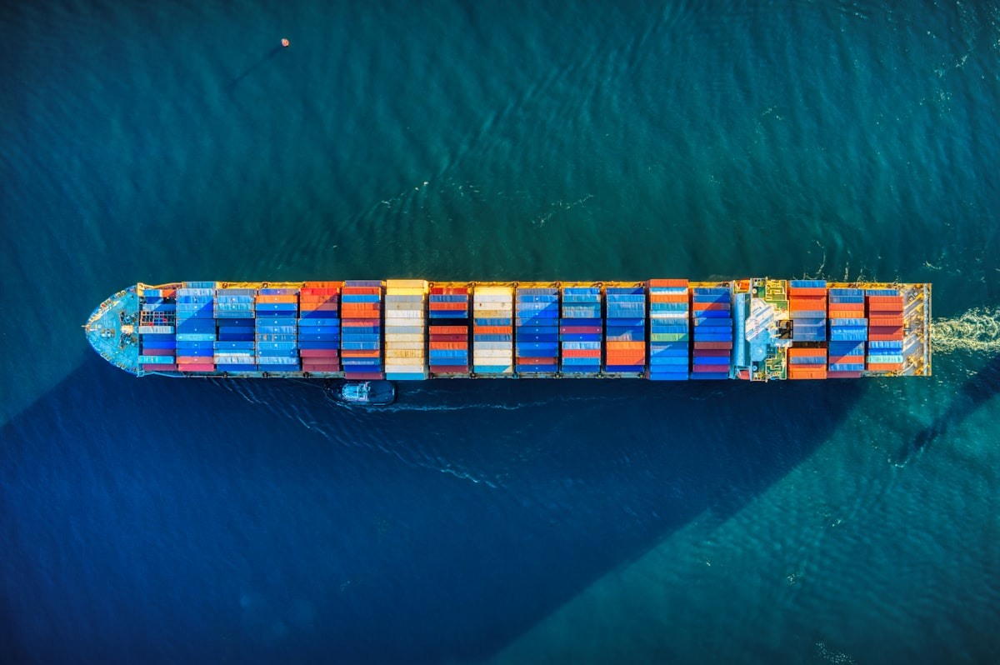
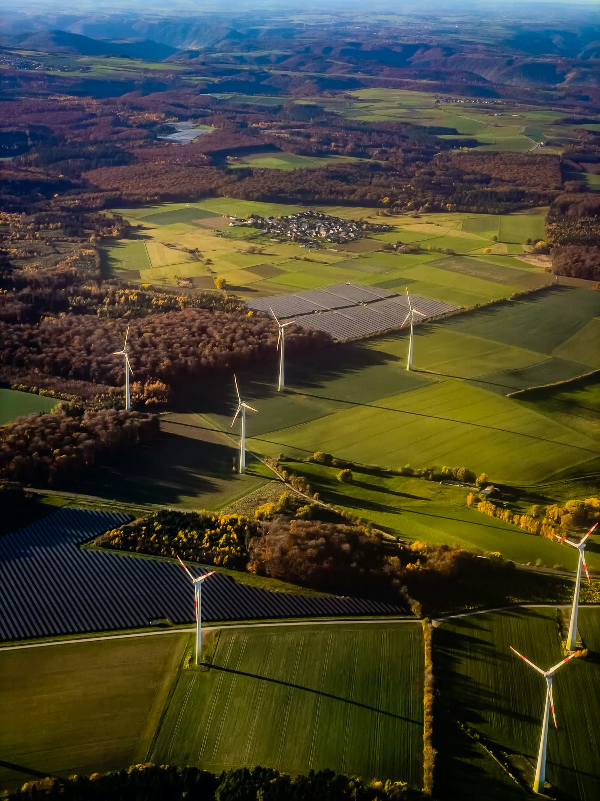

화학 (Chemicals)
도료·플라스틱·전자·퍼스널케어·수처리 산업을 위한 산업용 및 정밀화학 원료. 자격이 검증된 생산자로부터 소싱하여 합의된 규격대로 공급합니다.
화학과 농산물은 전혀 다른 시장에서 움직이지만, 무역상사에 요구하는 것은 같습니다. 확인된 원산지, 문서화된 품질, 그리고 계약서에 적힌 날짜에 도착하는 화물입니다.
산업마다 원료를 구매하는 방식이 다릅니다. 저희는 최종 시장을 기준으로 소싱을 조직하여, 등급·서류·포장이 귀사 라인에 바로 투입 가능한 상태로 도착하게 합니다.
가격은 쉬운 부분입니다. 신뢰할 수 있는 거래 상대를 가르는 것은 계약 체결과 하역 사이에 벌어지는 일이며, 저희가 집중하는 지점도 정확히 거기입니다.
익명의 온라인 리스팅이 아니라, 직접 실사했거나 거래 이력이 있는 생산자와 일합니다. 원산지·공장·등급을 처음부터 명시합니다.
선적 예약, 포장, 위험물 신고, 통관, 최종 인도까지 하나의 담당 창구에서 단일 프로세스로 처리합니다.
성적서(CoA), MSDS/SDS, 식물검역증, 원산지증명서를 처음부터 정확히 준비해 화물이 세관에 잡히지 않게 합니다.
대한민국을 거점으로 아시아, 중동, 유럽, 미주에 소싱 및 판매 채널을 운영합니다.
단순 백투백 중개상이 아닙니다. 반복 구매되는 주요 품목은 자사 계정으로 매입해 재고로 보유합니다 — 재고 출고 주문은 선적을 기다리지 않고 수일 내 출하됩니다.

검증된 생산자, 실사된 공장, 명시된 원산지와 등급.
선적 전 배치별 성적서와 제3자 검사.
벌크, ISO 탱크, 컨테이너, 포대 — 하나의 워크플로로 수배하고, 재고 품목은 바로 출고합니다.
도착국이 실제로 요구하는 기준에 맞춘 서류.
하역까지 추적, 클레임과 재공급까지 같은 데스크가 대응.
문서화된 단일 프로세스로 진행하므로, 화물이 지금 어느 단계에 있는지 항상 확인하실 수 있습니다.
품목, 등급, 목표 물량, 도착지를 보내주시면 기술적·상업적으로 실현 가능한 범위를 먼저 확인한 뒤 견적을 제시합니다.
요구사항에 맞는 생산자를 매칭하고 전체 규격이 포함된 오퍼를 발행합니다. 필요 시 샘플을 발송해 승인 절차를 진행합니다.
인코텀즈, 포장 사양, 검품 기준, 결제 구조(L/C·T/T·D/P)를 서면으로 합의하여 매매계약서를 발행합니다.
계약 규격 기준으로 생산을 모니터링하며, 요청 시 SGS·Intertek 등 제3자 검사 기관의 선적 전 검사를 수배합니다.
선적 예약, 포장, 해당하는 경우 위험물 분류를 완료하고 합의된 조건에 따라 전체 선적 서류를 릴리스합니다.
하역까지 추적하며, 클레임 처리·재발주 일정·선도 계약까지 동일한 담당팀이 이어서 대응합니다.
20피트 단일 컨테이너와 LCL 소량 화물부터 벌크선 만재 물량까지, 최소주문량이 아니라 수요처 설비 기준으로 규모를 맞춥니다.
수입 요건 확인, 화학물질 등록, 위험물 분류, 도착국 라벨링 요건까지 함께 처리합니다.
신용장, 추심결제, 그리고 거래 실적이 쌓인 상대방에 대한 외상 조건까지 은행 파트너와 함께 설계합니다.
구매 품목의 시장 상황을 공유하고, 원자재 시장이 허용하는 범위에서 고정가·연동가· 선도 계약 옵션을 제안합니다.
드럼, IBC, 톤백, 소매 규격으로의 재포장과 고객 지정 라벨링, 재수출용 중립 포장을 지원합니다.
공급 연속성이 무엇보다 중요한 수요처를 위해 연간·복수년 오프테이크 계약과 분할 인도 스케줄을 운영합니다.

화학품과 식품 공급망 화물에는 실질적인 의무가 따릅니다 — 취급하는 사람, 닿아서는 안 될 수계, 그리고 이를 규제하는 시장에 대한 의무입니다. 안전, 제품 스튜어드십, 책임 소싱에 대한 접근을 확인하십시오.